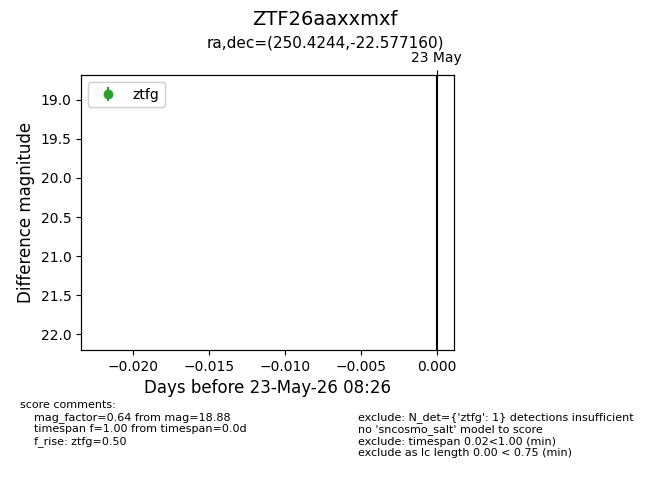
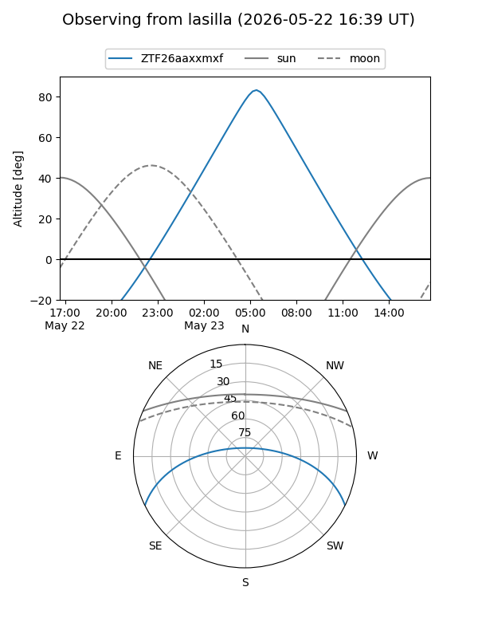
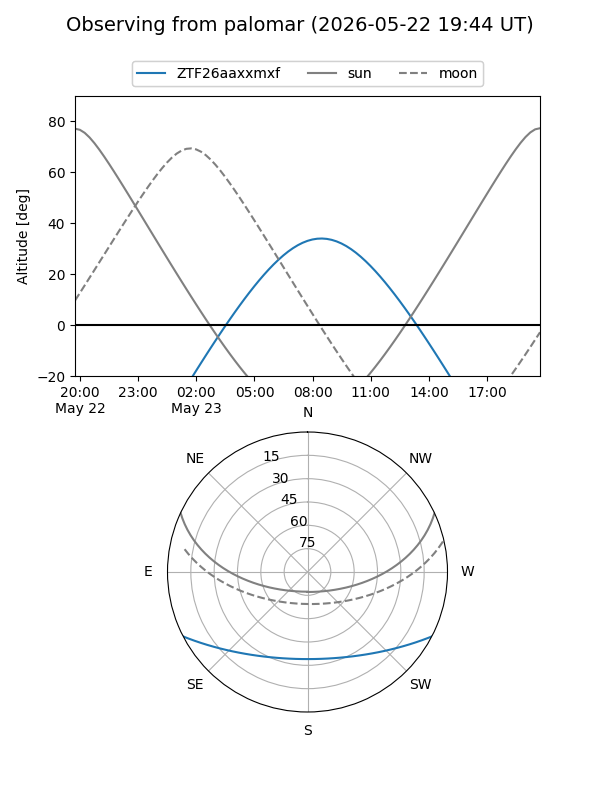
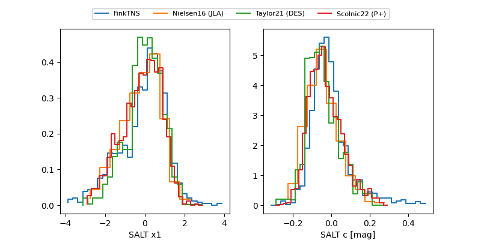

ZTF26aaxxmxf
Target ZTF26aaxxmxf at 2026-05-23 08:27
Aliases and brokers:
lsst-FINK: link
lsst-Lasair: link
lsst-ALeRCE: link
ztf-FINK: link
ztf-Lasair: link
ztf-ALeRCE: link
alt names
ZTF26aaxxmxf (ztf,fink_ztf)
Coordinates:
equatorial (ra, dec) = 250.4244,-22.57716
equatorial (HMS+DMS) = 16:41:41.85,-22:34:37.77
galactic (l, b) = (356.8692,+15.40816)
Flags:
Photometry:
last ztfg=18.88
1 ztfg detections
Lightcurve

Visibility


Additional plots
